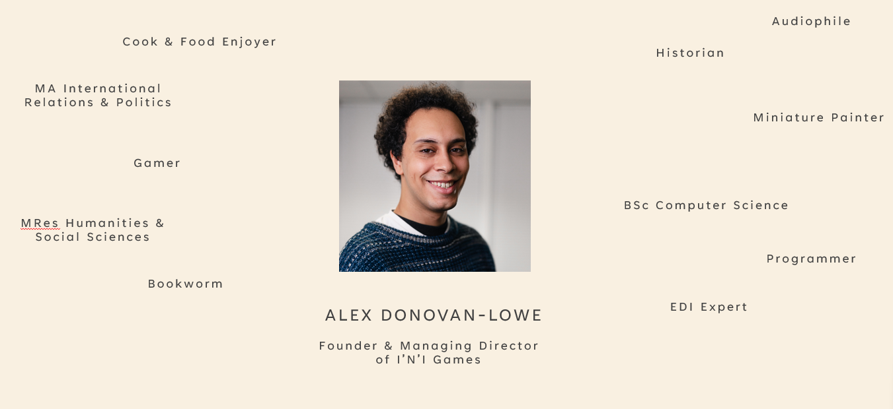

Our Story
I'N'I Games was born from a simple belief: that the stories of Black history, culture, and heritage deserve to be celebrated, shared, and passed down through generations in ways that are engaging, authentic, and sustainable.
Our Vision
To see Black history, culture, and brilliance widely known, proudly celebrated, and uniquely explored through games that bring people together. While being ethical and sustainable with our materials.
Our Mission
I'N'I Games creates engaging board games rooted in Black culture and history, using play as a tool for education, storytelling, and connection across generations and communities.
The People
We are committed to uplifting Black communities worldwide by creating fair, meaningful work both in the UK and in the regions where our stories come from, including the Caribbean and across Africa. We work directly with writers, artists, historians, and designers from these communities and ensure that all contributors are paid fairly and transparently. Where possible, contributors are offered clear pathways into long-term employment. Our employees are treated as partners in the company's success, with shares reserved for staff and pay structured to be genuinely fair. The highest-paid role in the company will never earn more than three times the lowest-paid employee. We believe that ethical storytelling must be matched by ethical business practice.
The Planet
The stories we tell are rooted in land, people, and history, and our production reflects that responsibility. As part of this, we recognise that the Global South will be more disproportionately affected by climate change. Our games are made using plastic-free, recyclable, and responsibly sourced materials, with a focus on natural options such as paper and cardboard. Organic and sustainable inputs are prioritised, and materials that compromise recyclability are avoided. We aim to reduce our environmental impact through low-carbon shipping and thoughtful distribution. Honouring culture also means protecting the environment that sustains it.
Meet the Founder
Our founder established I'N'I Games with a vision to create games that matter. After years as a boardgame hobbyist, he never saw himself or his friends and family represented. With the saying "be the change you want to see in the world" in mind, he has gone about establishing I'N'I Games.
Alex Donovan-Lowe
Founder & Managing Director of I'N'I Games
- Boardgame Hobbyist
- EDI Officer
- MA International Relations & Politics
- MRes Humanities & Social Sciences
- BSc Computer Science
- Bookworm
- Gamer
- Cook & Food Enjoyer
- Audiophile
- Historian
- Miniature Painter
- Programmer